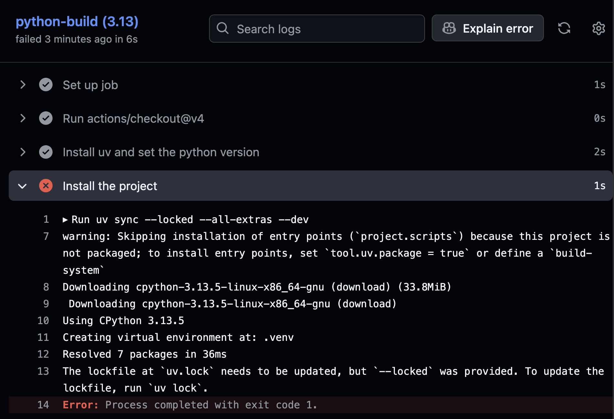
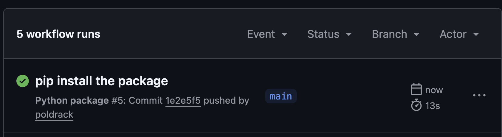
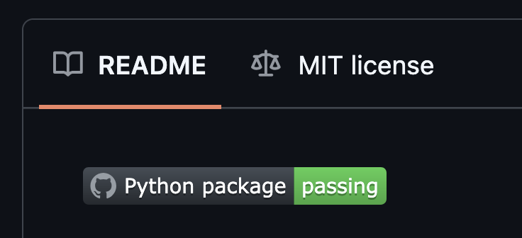

Software testing#
Contents
Tests define the expected behavior of code, and detect when the code doesn’t match that expected behavior.
One useful analogy for software testing comes from the biosciences. Think for a moment about the rapid COVID-19 tests that we all came to know during the pandemic. These tests had two lines, one of which was a control line; if this line didn’t show up, then that meant that the test was not functioning as expected. This is known as a positive control because it assesses the test’s ability to identify a positive response1. Other tests also include negative controls, which ensure that the test returns a negative result when it should.
By analogy, we can think of software tests as being either positive or negative controls for the expected outcome of a software component. A positive test assesses whether, given a particular valid input, the component returns the correct output. A negative test assesses whether, in the absence of valid input, the component correctly returns the appropriate error message or null result.
Why use software tests?#
The most obvious reason to write tests for code is to make sure that the answers that the code gives you are correct. This becomes increasingly important as AI assistants write more of the code, to the degree that testing is becoming more important than code generation as a skill for generating good scientific code. But creating correct code is far from the only reason for writing tests.
A second reason for testing was highlighted in our earlier discussion of test-driven development. Tests can provide the coder with a measure of task completion; when the tests pass, the job is done, other than refactoring the code to make it cleaner and more robust. Writing tests make one think harder about what exactly they want/need the code to do, and to specify those goals in as clear a way as possible. Focusing on tests can help keep the coder’s “eyes on the MVP prize” and prevent generating too much extraneous code (“gold plating”).
A third reason to write tests is that they can help drive modularity in the code. It’s much easier to write tests for a simple function that does a single thing than for a complex function with many different roles. Testing can also help drive modularity by causing you to think more clearly about what a function does when developing the test; the inability to easily write a test for a function can suggest that the function might be overly complex and should be refactored. In this way, writing tests can give us useful insights into the structure of the code.
A final reason to write tests is that they make it much easier to make changes to the code. Without a robust test suite, one is always left worried that changing some aspect of the code will have unexpected effects on its former behavior (known as a “regression”). Tests can provide you with the comfort you need to make changes, knowing that you will detect any untoward effects your changes might have. This includes refactoring, where the changes are not meant to modify the function but simply to make the code more robust and readable.
Types of tests#
Unit tests#
Unit tests are the bread and butter of software testing. They are meant to assess whether individual software components (in the case of Python, functions, classes, and methods) perform as expected. This includes both assessing whether the component performs as it is supposed to perform given a particular input, but also assessing whether it performs correctly under boundary conditions or problematic conditions, where the correct response is often to raise an exception. A major goal of unit testing in the latter case is preventing “garbage in, garbage out” behavior. For example, say that we are testing a function that takes in two matrices, and that the size of these matrices along their first dimension is assumed to match. In this case, we would want to test to make sure that if the function is provided with two matrices that mismatch in their first dimension, the function will respond by raising an exception rather than by giving back an answer that is incorrect or nonsensical (such as NaN, or “not a number”). That is, we want to aim for “garbage in, exception out” behavior.
Integration tests#
As the name suggests, an integration test assesses whether the entire application works as it should, integrating all of the components that were tested via unit testing.
One simple type of integration test is a “smoke test”. This name apparently derives from the computer hardware industry, where one often performs an initial sanity test on an electronic component by plugging it in and seeing if it smokes. In coding, a smoke test is a simple sanity check meant to ensure that the entire application runs without crashing. This is usually accomplished by running a top-level function that exercises the entire application. Smoke tests are useful for quickly identifying major problems, but they don’t actually test whether the application performs its function correctly. They can be especially useful for large applications, where the full test suite may take hours to run. An initial smoke test can determine whether something is broken downstream, saving lots of wasted testing time.
Full integration tests assess the function of the entire application; one can think of them as unit tests where the unit is the entire application. Just as with unit tests, we want integration tests that both confirm proper operation under intended conditions, as well as confirming proper behavior (such as exiting with an error message) under improper conditions.
The anatomy of a test#
A test is generally structured as a function that executes without raising an exception as long as the code behaves in an expected way. Let’s say that we want to generate a function that returns the escape velocity of a planet:
import math
import numpy as np
def escape_velocity(mass: float, radius: float, G=6.67430e-11):
"""
Calculate the escape velocity from a celestial body, given its mass and radius.
Args:
mass (float): Mass of the celestial body in kg.
radius (float): Radius of the celestial body in meters.
Returns:
float: Escape velocity in m/s.
"""
return math.sqrt(2 * G * mass / radius)
We can then generate a test to determine whether the value returned by our function matches the known value for a given planet:
def test_escape_velocity():
"""
Test the escape_velocity function with known values.
"""
mass_earth = 5.972e24 # Earth mass in kg
radius_earth = 6.371e6 # Earth radius in meters
ev_expected = 11186.0 # Expected escape velocity for Earth in m/s
ev_computed = escape_velocity(mass_earth, radius_earth)
assert np.allclose(ev_expected, ev_computed), "Test failed!"
We can run this using pytest (more about this later), which tells us that the test passes:
❯ pytest src/BetterCodeBetterScience/escape_velocity.py
====================== test session starts ======================
src/BetterCodeBetterScience/escape_velocity.py .. [100%]
======================= 1 passed in 0.10s =======================
If the returned value didn’t match the known value (within a given level of tolerance, which is handled by np.allclose()), then the assertion will fail and raise an exception, causing the test to fail.
For example, if we had mis-specified the expected value as 1186.0, we would have seen an error like this:
❯ pytest src/BetterCodeBetterScience/escape_velocity.py
====================== test session starts ======================
src/BetterCodeBetterScience/escape_velocity.py F [100%]
=========================== FAILURES ===========================
_____________________ test_escape_velocity _____________________
def test_escape_velocity():
"""
Test the escape_velocity function with known values.
"""
mass_earth = 5.972e24 # Earth mass in kg
radius_earth = 6.371e6 # Earth radius in meters
ev_expected = 1186.0 # 11186.0 # Expected escape velocity for Earth in m/s
ev_computed = escape_velocity(mass_earth, radius_earth)
> assert np.allclose(ev_expected, ev_computed), "Test failed!"
E AssertionError: Test failed!
E assert False
E + where False = <function allclose at 0x101403370>(1186.0, 11185.97789184991)
E + where <function allclose at 0x101403370> = np.allclose
src/BetterCodeBetterScience/escape_velocity.py:26: AssertionError
===================== short test summary info =====================
FAILED src/BetterCodeBetterScience/escape_velocity.py::test_escape_velocity - AssertionError: Test failed!
======================== 1 failed in 0.11s ========================
It’s also important to make sure that an exception is raised whenever it should be.
For example, the version of the escape_velocity() function above did not check to make sure that the mass and radius arguments had positive values, which means that it would give nonsensical results when passed a negative mass or radius value.
To address this we should add code to the function that causes it to raise an exception if either of the arguments is negative:
def escape_velocity(mass: float, radius: float, G=6.67430e-11):
"""
Calculate the escape velocity from a celestial body, given its mass and radius.
Args:
mass (float): Mass of the celestial body in kg.
radius (float): Radius of the celestial body in meters.
Returns:
float: Escape velocity in m/s.
"""
if mass <= 0 or radius <= 0:
raise ValueError("Mass and radius must be positive values.")
return math.sqrt(2 * G * mass / radius)
We can then specify a test that checks whether the function properly raises an exception when passed a negative value.
To do this we can use a feature of the pytest package (pytest.raises) that passes only if the specified exception is raised:
def test_escape_velocity_negative():
"""
Make sure the function raises ValueError for negative mass or radius.
"""
with pytest.raises(ValueError):
escape_velocity(-5.972e24, 6.371e6)
When to write tests#
Too often researchers decide to write tests after they have written an entire codebase. Having any tests is certainly better than having no tests, but integrating testing into ones development workflow from the start can help improve the development experience and ultimately lead to better and more maintainable software. In Chapter 1 we mentioned the idea of test-driven development, which we outline in more detail below, but we first discuss a simple approach to introducing testing into the development process.
Bug-driven testing: Any time you encounter a bug, write a test#
An easy way to introduce testing into the development process is to write a new test any time one encounters a bug, which we refer to as bug-driven testing. This makes it easy to then work on fixing the bug, since the test will determine when the bug has been fixed. In addition, the test will detect if future changes reintroduce the bug.
As an example, take the following function:
def find_outliers(data: List[float], threshold: float = 2.0) -> List[int]:
"""
Find outliers in a dataset using z-score method.
Parameters
----------
data : List[float]
List of numerical values.
threshold : float, default=2.0
Number of standard deviations from the mean to consider a value as an outlier.
Returns
-------
List[int]
List of indices of outliers in the data.
"""
mean = sum(data) / len(data)
variance = sum((x - mean) ** 2 for x in data) / len(data)
std = variance ** 0.5
# Bug: division by zero when std is 0 (all values are identical)
# This only happens when all data points are the same
outliers = []
for i, value in enumerate(data):
z_score = abs(value - mean) / std
if z_score > threshold:
outliers.append(i)
return outliers
This code works to properly identify outliers:
In : data = [1, 2, 3, 1000, 4, 5, 6]
In : find_outliers(data)
Out: [3]
However, it fails due to a division by zero if all of the values are equal:
In : data = [1, 1, 1, 1, 1]
In : find_outliers(data)
---------------------------------------------------------------------------
ZeroDivisionError Traceback (most recent call last)
Cell In[21], line 1
----> 1 find_outliers(data)
Cell In[9], line 26, in find_outliers(data, threshold)
24 outliers = []
25 for i, value in enumerate(data):
---> 26 z_score = abs(value - mean) / std
27 if z_score > threshold:
28 outliers.append(i)
ZeroDivisionError: float division by zero
Our intended behavior if all of the values are equal is to return an empty list, since there are by definition no outliers. But before we do this, let’s create a couple of tests to check for the intended behavior and provide useful error messages if the test fails:
def test_find_outliers_normal_case():
data = [1, 2, 3, 4, 5, 100] # 100 is clearly an outlier
outliers = find_outliers(data, threshold=2.0)
# Should find the outlier at index 5
assert 5 in outliers, f"Failed to detect outlier: {outliers}"
assert len(outliers) == 1, f'Expected exactly one outlier, got: {len(outliers)}'
def test_find_outliers_identical_values():
data = [5, 5, 5, 5, 5] # All identical values
outliers = find_outliers(data, threshold=2.0)
assert outliers == [], f"Expected no outliers for identical values, got {outliers}"
Running this with the original function definition, we see that it fails:
❯ pytest src/BetterCodeBetterScience/bug_driven_testing.py
=========================== test session starts ===========================
collected 2 items
src/BetterCodeBetterScience/bug_driven_testing.py .F [100%]
================================ FAILURES =================================
___________________ test_find_outliers_identical_values ___________________
def test_find_outliers_identical_values():
data = [5, 5, 5, 5, 5] # All identical values
> outliers = find_outliers(data, threshold=2.0)
src/BetterCodeBetterScience/bug_driven_testing.py:50:
_ _ _ _ _ _ _ _ _ _ _ _ _ _ _ _ _ _ _ _ _ _ _ _ _ _ _ _ _ _ _ _ _ _ _ _ _ _
data = [5, 5, 5, 5, 5], threshold = 2.0
def find_outliers(data: List[float], threshold: float = 2.0) -> List[int]:
"""
Find outliers in a dataset using z-score method.
Parameters
----------
data : List[float]
List of numerical values.
threshold : float, default=2.0
Number of standard deviations from the mean to consider a value as an outlier.
Returns
-------
List[int]
List of indices of outliers in the data.
"""
mean = sum(data) / len(data)
variance = sum((x - mean) ** 2 for x in data) / len(data)
std = variance ** 0.5
# Bug: division by zero when std is 0 (all values are identical)
# This only happens when all data points are the same
outliers = []
for i, value in enumerate(data):
> z_score = abs(value - mean) / std # Bug: std can be 0!
E ZeroDivisionError: float division by zero
src/BetterCodeBetterScience/bug_driven_testing.py:31: ZeroDivisionError
========================= short test summary info =========================
FAILED src/BetterCodeBetterScience/bug_driven_testing.py::test_find_outliers_identical_values
- ZeroDivisionError: float division by zero
======================= 1 failed, 1 passed in 0.10s =======================
We can now fix the code by returning an empty list if zero standard deviation is detected:
...
if std == 0:
# If standard deviation is zero, all values are identical, so no outliers
return []
Here we add a comment to explain the intention of the statement. Running the tests now will show that the problem is fixed:
❯ pytest src/BetterCodeBetterScience/bug_driven_testing.py
=========================== test session starts ===========================
collected 2 items
src/BetterCodeBetterScience/bug_driven_testing.py .. [100%]
============================ 2 passed in 0.08s ============================
Now we can continue coding with confidence that if we happen to accidentally reintroduce the bug, it will be caught.
The structure of a good test#
A commonly used scheme for writing a test is “given/when/then”:
given some particular situation as background
when something happens (such as a particular input)
then something else should happen (such as a particular output or exception)
Importantly, a test should only test one thing at a time. This doesn’t mean that the test should necessarily only test for one specific error at a time; rather, it means that the test should assess a specific situation (“given/when”), and then assess all of the possible outcomes that are necessary to ensure that the component functions properly (“then”). You can see this in the test for zero standard deviation that we generated in the earlier example, which actually tested for two conditions (the intended value being present in the list, and the list having a length of one) that together define the condition that we are interested in testing for.
How do we test that the output of a function is correct given the input? There are different answers for different situations:
commonly known answer: Sometimes we possess inputs where the output is known. For example, if we were creating a function that computes the circumference of a circle, then we know that the output for an input radius of 1 should be 2 * pi. This is generally only the case for very simple functions.
reference implementation: In other cases we may have a standard implementation of an algorithm that we can compare against. While in general it’s not a good idea to reimplement code that already exists in a standard library, in come cases we may want to extend existing code but also check that the basic version still works as planned.
parallel implementation: Some times we don’t have a reference implementation, but we can code up another parallel implementation to compare our code to. It’s important that this isn’t just a copy of the code used in the function; in that case, it’s really not a test at all!
behavioral test: Sometimes the best we can do is to run the code repeatedly and ensure that it behaves as expected on average. For example, if a function outputs a numerical value and we know the expected distribution of that value given a particular input, we can ensure that the result matches that distribution with a high probability. Such probabilistic tests are not optimal in the sense that they can occasionally fail even when the code is correct, but they are sometimes the best we can do.
Test against the interface, not the implementation#
A good test shouldn’t know about the internal implementation details of the function that it is testing, and changes in the internal code that do not modify the input-output relationship should not affect the test. That is, from the standpoint of the test, a function should be a “black box”.
The most common way in which a test can violate this principle is by accessing the internal variables of a class that it is testing. For example, we might generate a class that performs a scaling operation on a numpy matrix:
class SimpleScaler:
def __init__(self):
self.transformed_ = None
def fit(self, X):
self.mean_ = X.mean(axis=0)
self.std_ = X.std(axis=0)
def transform(self, X):
self.transformed_ = (X - self.mean_) / self.std_
return self.transformed_
def fit_transform(self, X):
self.fit(X)
return self.transform(X)
We could write a test that checks the values returned by the fit_transform() method, treating the the class as a black box:
def test_simple_scaler_interface():
X = np.array([[1, 2], [3, 4], [5, 6]])
scaler = SimpleScaler()
# Test the interface without accessing internals
transformed_X = scaler.fit_transform(X)
assert np.allclose(transformed_X.mean(axis=0), np.array([0, 0]))
assert np.allclose(transformed_X.std(axis=0), np.array([1, 1]))
Alternatively one might use knowledge of the internals of the class to test the transformed value:
def test_simple_scaler_internals():
X = np.array([[1, 2], [3, 4], [5, 6]])
scaler = SimpleScaler()
_ = scaler.fit_transform(X)
# Test that the transformed data is correct using the internal
assert np.allclose(scaler.transformed_.mean(axis=0), np.array([0, 0]))
assert np.allclose(scaler.transformed_.std(axis=0), np.array([1, 1]))
Both of these tests pass against the class definition shown above.
However, if we were to change the way that the transformation is performed (for example, we decide to use the StandardScaler function from scikit-learn instead of writing our own), then the implementation-aware tests are likely to fail unless the sample internal variable names are used.
In general we should only interact with a function or class via its explicit interfaces.
Tests should be independent#
In scientific computing it’s common to compose many different operations into a workflow. If we want to test the workflow, then the tests of later steps in the workflow must necessarily rely upon earlier steps. We could in theory write a set of tests that operate on a shared object, but the tests would fail if executed in an incorrect order, even if the code was correct. Similarly, a failure on an early test would cause cascading failures in later tests, even if their code was correct. The use of ordered tests also prevents the parallel execution of tests, which may slow down testing for complex projects. For these reasons, we should always aim to create tests that can be executed independently.
Here is an example where coupling between tests could cause failures. First we generate two functions that make changes in place to a data frame:
def split_names(df):
df['firstname'] = df['name'].apply(lambda x: x.split()[0])
df['lastname'] = df['name'].apply(lambda x: x.split()[1])
def get_initials(df):
df['initials'] = df['firstname'].str[0] + df['lastname'].str[0]
In this case, the get_initials() function relies upon the split_names() function having been run, since otherwise the necessary columns won’t exist in the data frame.
We can then create tests for each of these, and a data frame that they can both use:
people_df = pd.DataFrame({'name': ['Alice Smith', 'Bob Howard', 'Charlie Ashe']})
def test_split_names():
split_names(people_df)
assert people_df['firstname'].tolist() == ['Alice', 'Bob', 'Charlie']
assert people_df['lastname'].tolist() == ['Smith', 'Howard', 'Ashe']
def test_get_initials():
get_initials(people_df)
assert people_df['initials'].tolist() == ['AS', 'BH', 'CA']
These tests run correctly, but the same tests fail if we change their order such that test_get_intials() runs first, because the necessary columns (firstname and lastname) have not yet been created.
One simple way to deal with this is to set up all of the necessary structure locally within each test:
def get_people_df():
return pd.DataFrame({'name': ['Alice Smith', 'Bob Howard', 'Charlie Ashe']})
def test_split_names_fullsetup():
local_people_df = get_people_df()
split_names(local_people_df)
assert local_people_df['firstname'].tolist() == ['Alice', 'Bob', 'Charlie']
assert local_people_df['lastname'].tolist() == ['Smith', 'Howard', 'Ashe']
def test_get_initials_fullsetup():
local_people_df = get_people_df()
split_names(local_people_df)
get_initials(local_people_df)
assert local_people_df['initials'].tolist() == ['AS', 'BH', 'CA']
For simple functions like these this would not cause too much computational overhead, but for computationally intensive functions we would like to be able to reuse the results from the first time each function is run. In a later section we will discuss the use of fixtures which allow this kind of reuse across tests while avoiding the ordering problems that we saw above when using a global variable across tests.
Testing frameworks#
One could write tests without the help of any specialized packages, but we generally use a testing framework to help automate the activities of testing.
There are several testing frameworks for Python; we will focus on the popular and flexible pytest framework.
We will start with a very simple example: a function that generates the Euclidean distance between two points. Copilot generates the following for us based on the prompt in the comment:
# generate a function that calculates the distance between two points
# where each point is defined as a tuple of two numbers
import math
def distance(p1, p2):
"""Calculate the distance between two points"""
x1, y1 = p1
x2, y2 = p2
return math.sqrt((x2 - x1)**2 + (y2 - y1)**2)
Now we would like to generate some tests for this code to make sure that it works properly. If we ask Copilot to generate some tests, it does a seeming decent job:
def test_distance_zero():
assert distance((0, 0), (0, 0)) == 0
def test_distance_positive_coordinates():
assert distance((1, 2), (4, 6)) == 5
def test_distance_negative_coordinates():
assert distance((-1, -2), (-4, -6)) == 5
def test_distance_mixed_coordinates():
assert distance((1, -2), (-4, 6)) == math.sqrt(125)
def test_distance_same_x():
assert distance((3, 4), (3, 8)) == 4
def test_distance_same_y():
assert distance((3, 4), (7, 4)) == 4
Now that we have our tests, we can run them using the pytest command:
pytest src/BetterCodeBetterScience/distance_testing
This command will cause pytest to search (by default) for any files named test_*.py or *_test.py in the relevant path, and the select any functions whose name starts with the prefix “test”.
Running those tests, we get an error:
> assert distance((1, -2), (-4, 6)) == math.sqrt(125)
E assert 9.433981132056603 == 11.180339887498949
E + where 9.433981132056603 = distance((1, -2), (-4, 6))
E + and 11.180339887498949 = <built-in function sqrt>(125)
E + where <built-in function sqrt> = math.sqrt
Here we see that the value returned by our function is different from the one expected by the test; in this case, the test value generated by Copilot is incorrect. In our research, it was not uncommon for ChatGPT to generate incorrect test values, so these must always be checked by a domain expert. Once we fix the expected value for that test (the square root of 89), then we can rerun the tests and see that they have passed:
python -m pytest pytest src/BetterCodeBetterScience/distance_testing
==================== test session starts =====================
src/codingforscience/simple_testing/test_distance.py . [ 16%]
..... [100%]
===================== 6 passed in 0.06s ======================
Potential problems with AI-generated tests#
If we are going to rely upon AI tools to generate our tests, we need to be sure that the tests are correct. One of my early forays into AI-driven test generation uncovered an interesting example of how this can go wrong.
In our early project that examined the performance of GPT-4 for coding [Poldrack et al., 2023], one of the analyses that we performed first asked GPT-4 to do was to generate a set of functions related to common problems in several scientific domains, and then to generate tests to make sure that the function performed correctly. One of the functions that was generated was the escape velocity function shown above, for which GPT-4 generated the following test:
def test_escape_velocity():
mass_earth = 5.972e24
radius_earth = 6.371e6
result = escape_velocity(mass_earth, radius_earth)
assert pytest.approx(result, rel=1e-3) == 11186.25
mass_mars = 6.4171e23
radius_mars = 3.3895e6
result = escape_velocity(mass_mars, radius_mars)
assert pytest.approx(result, rel=1e-3) == 5027.34
mass_jupiter = 1.8982e27
radius_jupiter = 6.9911e7
result = escape_velocity(mass_jupiter, radius_jupiter)
assert pytest.approx(result, rel=1e-3) == 59564.97
When we run this test (renaming it test_escape_velocity_gpt4), we see that one of the tests fails:
❯ pytest src/BetterCodeBetterScience/escape_velocity.py::test_escape_velocity_gpt4
==================================== test session starts ====================================
platform darwin -- Python 3.12.0, pytest-8.4.1, pluggy-1.5.0
rootdir: /Users/poldrack/Dropbox/code/BetterCodeBetterScience
configfile: pyproject.toml
plugins: cov-5.0.0, anyio-4.6.0, hypothesis-6.115.3, mock-3.14.0
collected 1 item
src/BetterCodeBetterScience/escape_velocity.py F [100%]
========================================= FAILURES ==========================================
_________________________________ test_escape_velocity_gpt4 _________________________________
def test_escape_velocity_gpt4():
mass_earth = 5.972e24
radius_earth = 6.371e6
result = escape_velocity(mass_earth, radius_earth)
assert pytest.approx(result, rel=1e-3) == 11186.25
mass_mars = 6.4171e23
radius_mars = 3.3895e6
result = escape_velocity(mass_mars, radius_mars)
assert pytest.approx(result, rel=1e-3) == 5027.34
mass_jupiter = 1.8982e27
radius_jupiter = 6.9911e7
result = escape_velocity(mass_jupiter, radius_jupiter)
> assert pytest.approx(result, rel=1e-3) == 59564.97
E assert 60202.716344497014 ± 60.2027 == 59564.97
E
E comparison failed
E Obtained: 59564.97
E Expected: 60202.716344497014 ± 60.2027
src/BetterCodeBetterScience/escape_velocity.py:52: AssertionError
================================== short test summary info ==================================
FAILED src/BetterCodeBetterScience/escape_velocity.py::test_escape_velocity_gpt4 - assert 60202.716344497014 ± 60.2027 == 59564.97
===================================== 1 failed in 0.12s =====================================
It seems that the first two assertions pass but the third one, for Jupiter, fails. This failure took a bit of digging to fully understand. In this case, the code and test value are both correct, depending on where you stand on Jupiter! The problem is that planets are oblate, meaning that they are slightly flattened such that the radius around the equator is higher than at other points. NASA’s Jupiter fact sheet claims an escape velocity of 59.5 km/s, which seems to be the source of the test value. This is correct when computed using the equatorial radius of 71492 km. However, the radius given for Jupiter in GPT-4’s test (69911 km) is the volumetric mean radius rather than the equatorial radius, and the value generated by the code (60.2 km/s) is correct when computed using the volumetric mean radius. Thus, the test failed not due to any problems with the code itself, but due to a mismatch in assumptions regarding the combination of test values. This example highlights the importance of understanding and checking the tests that are generated by AI coding tools.
Test-driven development and AI-assisted coding#
Here we will dive into a more realistic example of an application that one might develop using AI assistance, specifically looking at how we could develop the application using a test-driven development (TDD) approach. We will develop a Python application that takes in a query for the PubMed database and returns a data frame containing the number of database records matching that query for each year. We start by decomposing the problem and sketching out the main set of functions that we will need to develop, with understandable names for each:
get_PubmedIDs_for_query: A function that will search pubmed for a given query and return a list of pubmed IDsget_record_from_PubmedID: A function that will retrieve the record for a given pubmed IDparse_year_from_Pubmed_record: A function that will parse a record to extract the year of publicationA function that will summarize the number of records per year
The main function that will take in a query and return a data frame with the number of records per year for the query
We start by creating get_PubmedIDs_for_query.
We could use the Biopython.Entrez module to perform this search, but Biopython is a relatively large module that could introduce technical debt.
Instead, we will directly retrieve the result using the Entrez API and the built-in requests module.
Note that for all of the code shown here we will not include docstrings, but they are available in the code within the repository.
If we are using the TDD approach, we would first want to develop a set of tests to make sure that our function is working correctly. The following three tests specify several different outcomes that we might expect. First, we give a query that is known to give a valid result, and test whether it in fact gives such a result:
def test_get_PubmedIDs_for_query_check_valid():
query = "friston-k AND 'free energy'"
ids = get_PubmedIDs_for_query(query)
# make sure that a list is returned
assert isinstance(ids, list)
# make sure the list is not empty
assert len(ids) > 0
Second, we give a query with a known empty result, and make sure it returns an empty list:
def test_get_PubmedIDs_for_query_check_empty():
query = "friston-k AND 'fizzbuzz'"
ids = get_PubmedIDs_for_query(query)
# make sure that a list is returned
assert isinstance(ids, list)
# make sure the resulting list is empty
assert len(ids) == 0
With the minimal tests in place, we then move to writing the code for the module. We first create an empty function to ensure that the tests fail:
def get_PubmedIDs_for_query(query: str,
retmax: int = None,
esearch_url: str = None) -> list:
return None
The test result shows that all of the tests fail:
❯ python -m pytest -v tests/textmining
================================== test session starts ===================================
...
tests/textmining/test_textmining.py::test_get_PubmedIDs_for_query_check_valid FAILED [ 50%]
tests/textmining/test_textmining.py::test_get_PubmedIDs_for_query_check_empty FAILED [100%]
======================================== FAILURES ========================================
________________________ test_get_PubmedIDs_for_query_check_valid ________________________
ids = None
def test_get_PubmedIDs_for_query_check_valid(ids):
> assert isinstance(ids, list)
E assert False
E + where False = isinstance(None, list)
tests/textmining/test_textmining.py:32: AssertionError
________________________ test_get_PubmedIDs_for_query_check_empty ________________________
def test_get_PubmedIDs_for_query_check_empty():
query = "friston-k AND 'fizzbuzz'"
ids = get_PubmedIDs_for_query(query)
> assert len(ids) == 0
^^^^^^^^
E TypeError: object of type 'NoneType' has no len()
tests/textmining/test_textmining.py:39: TypeError
================================ short test summary info =================================
FAILED tests/textmining/test_textmining.py::test_get_PubmedIDs_for_query_check_valid - assert False
FAILED tests/textmining/test_textmining.py::test_get_PubmedIDs_for_query_check_empty - TypeError: object of type 'NoneType' has no len()
=================================== 2 failed in 0.12s ====================================
Now we work with Copilot write the code to make the tests pass:
# define the eutils base URL globally for the module
# - not best practice but probably ok here
BASE_URL = "https://eutils.ncbi.nlm.nih.gov/entrez/eutils"
def get_PubmedIDs_for_query(
query: str, retmax: int = None, esearch_url: str = None
) -> list:
"""
Search database for a given query and return a list of IDs.
:param query: str, the query to search for
:param retmax: int, the maximum number of results to return
:base_url: str, the base url for the pubmed search
:return: list, a list of pubmed IDs
"""
# define the base url for the pubmed search
if esearch_url is None:
esearch_url = f"{BASE_URL}/esearch.fcgi"
params = format_pubmed_query_params(query, retmax=retmax)
response = requests.get(esearch_url, params=params)
return get_idlist_from_response(response)
def format_pubmed_query_params(query: str, retmax: int = 10000) -> str:
"""
Format a query for use with the pubmed api.
:param query: str, the query to format
:return: dict, the formatted query dict
"""
# define the parameters for the search
return {"db": "pubmed", "term": query, "retmode": "json", "retmax": retmax}
def get_idlist_from_response(response: requests.Response) -> list:
if response.status_code == 200:
# extract the pubmed IDs from the response
ids = response.json()["esearchresult"]["idlist"]
return ids
else:
raise ValueError("Bad request")
Note that we have split parts of the functionality into separate functions in order to make the code more understandable. Running the tests, we see that both of them pass. Assuming that our tests cover all possible outcomes of interest, we can consider our function complete. We can also add additional tests to cover additional functions that we generated; we won’t go into the details here, but you can see them on the Github repo.
Test coverage#
It can be useful to know if there are any portions of our code that are not being exercised by our tests, which is known as code coverage.
The pytest-cov extension for the pytest testing package can provide us with a report of test coverage for these tests:
---------- coverage: platform darwin, python 3.12.0-final-0 ----------
Name Stmts Miss Cover Missing
------------------------------------------------------------------------------------
src/BetterCodeBetterScience/textmining/textmining.py 30 1 97% 70
------------------------------------------------------------------------------------
TOTAL 30 1 97%
This report shows that of the 30 statements in our code, one of them is not covered by the tests.
When we look at the missing code (denoted as being on line 70), we see that the missing line is this one from get_idlist_from_response:
else:
# raise an exception if the search didn't return a usable response
raise ValueError("Bad request")
Since none of our test cases caused a bad request to occur, this line never gets executed in the tests.
We can address this by adding a test that makes sure that an exception is raised if an invalid base url is provided.
To check for an exception, we need to use the pytest.raises context manager:
def test_get_PubmedIDs_for_query_check_badurl():
query = "friston-k AND 'free energy'"
# bad url
base_url = 'https://eutils.ncbi.nlm.nih.gov/entrez/eutils/esearch.f'
# make sure that the function raises an exception
with pytest.raises(Exception):
ids = get_PubmedIDs_for_query(query, base_url=base_url)
After adding this test, we see that we now have 100% coverage. It’s important not to get too hung up on test coverage; rather than always aspiring to 100% coverage, it’s important to make sure that the most likely possible situations are tested. Just because you have 100% coverage doesn’t mean that your code is perfectly tested, since there could always be situations that you haven’t checked for. And spending too much time testing for unlikely problems can divert your efforts from other most useful activities.
Test fixtures#
Sometimes we need to use a the same data for multiple tests. Rather than duplicating potentially time-consuming processes across each of the tests, it is often preferable to create a single instance of the object that can be used across multiple tests, which is known as a test fixture. This also helps maintain isolation between tests, since the order of tests shouldn’t matter if an appropriate fixture is generated as soon as it’s needed.
For our example above, it’s likely that we will need to reuse the list of pubmed IDs from the search to perform various tests on the subsequent functions.
We can create a single version of this list of IDs by creating a fixture.
In the pytest framework we do this using a special Python operator called a decorator, which is denoted by the symbol @ as a prefix.
A decorator is function that takes another function as input, modifies its functionality, and returns another function; you don’t need to understand in detail how decorators work for this particular usage.
To refactor our tests above, we would first create the fixture by decorating the function that generates the fixture with the @pytest.fixture decorator, setting the scope variable to “session” so that the fixture is only generated once within the session:
@pytest.fixture(scope="session")
def ids():
query = "friston-k AND 'free energy'"
ids = get_PubmedIDs_for_query(query)
return ids
We can then refactor our tests for a valid query to use the fixture by passing it as an argument to the test function:
def test_get_PubmedIDs_for_query_check_valid(ids):
assert isinstance(ids, list)
assert len(ids) > 0
The result is the same, but we now have a set of ids that we can reuse in subsequent tests, so that we don’t have to make repeated queries.
It’s important to note while using a session-scoped fixture: If any of the subsequent tests modify the fixture, those modifications will persist, which will break the isolation between tests.
We could prevent this by removing the scope="session" argument, which would then default to the standard scope which is within a specific function.
If you wish to use session-scoped fixtures and need to modify them within the test function, then it is best to first create a copy of the fixture object (e.g. my_ids = ids.copy()) so that the global fixture object won’t be modified.
Mocking#
Sometimes tests require infrastructure that is outside of the control of the tester. In the example above, we are assuming that the Pubmed API is working correctly for our tests to run; if we were to try to run these tests without an internet connection, they would fail. In other cases, code may rely upon a database system that may or may not exist on a particular system. In these cases, we can create a mock object that can stand in for and simulate the behavior of the system that the code needs to interact with.
In our example, we want to create a mock response that looks sufficiently like a response from the real API to pass our tests.
Using pytest’s monkeypatch fixture, we can temporarily replace the real requests.get function with our own fake function that returns a predictable, controlled response.
We first need to create a class that can replace the requests.get call in get_PubmedIDs_for_query, replacing it with a mock version that outputs a fixed simulacrum of an API response via its .json() method.
class MockPubmedResponse:
status_code = 200
def json():
return {
'header': {'type': 'esearch', 'version': '0.3'},
'esearchresult': {
'count': '2',
'retmax': '20',
'retstart': '0',
'idlist': ['39312494', '39089179']
}
}
We now insert this mock response for the standard requests.get call within the test.
In my initial attempt, I created created a fixture based on the mocked response and then tested that fixture:
@pytest.fixture
def ids_mocked(monkeypatch):
def mock_get(*args, **kwargs):
return MockPubmedResponse()
# apply the monkeypatch for requests.get to mock_get
monkeypatch.setattr(requests, "get", mock_get)
query = "friston-k AND 'free energy'"
ids = get_PubmedIDs_for_query(query)
return ids
def test_get_PubmedIDs_for_query_check_valid_mocked(ids_mocked):
assert isinstance(ids_mocked, list)
assert len(ids_mocked) == 2
Turning off my network connection shows that the mocked test passes, while the tests that require connecting to the actual API fail. However, my usual code review (using Google’s Gemini 2.5 Pro) identified a problem with this fixture: it conflates the setup (creating the mock API) with the execution of the function that uses the mock API. A better approach (recommended by Gemini) is move the function execution out of the fixture and into the test:
# Fixture ONLY does the setup (the mocking)
@pytest.fixture
def mock_pubmed_api(monkeypatch):
class MockPubmedResponse:
status_code = 200
def json(self):
return {
'header': {'type': 'esearch', 'version': '0.3'},
'esearchresult': {
'count': '2',
'retmax': '20',
'retstart': '0',
'idlist': ['39312494', '39089179']
}
}
def mock_get(*args, **kwargs):
return MockPubmedResponse()
# Apply the monkeypatch for requests.get to mock_get
monkeypatch.setattr(requests, "get", mock_get)
# The test requests the setup, then performs the action and assertion.
def test_get_PubmedIDs_for_query_check_valid_mocked(mock_pubmed_api):
# Action: Call the function under test
query = "friston-k AND 'free energy'"
ids = get_PubmedIDs_for_query(query)
# Assertion: Check the result
assert isinstance(ids, list)
assert len(ids) == 2
Note that while mocking can be useful for testing specific components by saving time and increasing robustness, integration tests and smoke tests should usually be run without mocking, in order to catch any errors that arise through interaction with the relevant components that are being mocked. In fact, it’s always a good idea to have tests that specifically assess the usage of the external service and the system’s response to failures in that service (e.g. by using features of the testing framework that allow one to shut down access to the network).
Parametrized tests#
Often a function needs to accept a range of inputs that can result in different behavior, and we want to test each of the possible inputs to ensure that the function works correctly across the range. When the different inputs are known, one way to achieve this is to use a parameterized test, in which the test is repeatedly run across combinations of different possible values.
For our example, let’s move forward and develop the function parse_year_from_Pubmed_record to extract the year from Pubmed records, which can differ in their structure.
We first need to develop the function get_record_from_PubmedID to retrieve a record based on a Pubmed ID.
Following our TDD approach, we first develop two simple tests: one to ensure that it returns a non-empty dictionary for a valid Pubmed ID, and one to ensure that it raises an exception for an invalid Pubmed ID.
We also need to create empty functions so that they can be imported to run the (failing) tests:
def get_record_from_PubmedID(pmid: str) -> dict:
pass
def parse_year_from_Pubmed_record(pubmed_record: dict) -> int:
pass
Here are the initial tests; note that writing these tests requires a bit of knowledge about the expected structure of a Pubmed record. We will generate a fixture so that the valid record and PubMed ID can be reused in a later test.
@pytest.fixture(scope="session")
def valid_pmid():
return "39312494"
@pytest.fixture(scope="session")
def pmid_record(valid_pmid):
record = get_record_from_PubmedID(valid_pmid)
return record
def test_get_record_from_valid_PubmedID(pmid_record, valid_pmid):
assert pmid_record is not None
assert isinstance(pmid_record, dict)
assert pmid_record['uid'] == valid_pmid
def test_get_record_from_invalid_PubmedID():
pmid = "10000000000"
with pytest.raises(ValueError):
record = get_record_from_PubmedID(pmid)
Armed with these tests, we now work with Copilot to develop the code for get_record_from_PubmedID:
def get_record_from_PubmedID(pmid: str, esummary_url: str = None) -> dict:
if esummary_url is None:
esummary_url = f"{BASE_URL}/esummary.fcgi?db=pubmed&id={pmid}&retmode=json"
response = requests.get(esummary_url)
result_json = response.json()
if (
response.status_code != 200
or "result" not in result_json
or pmid not in result_json["result"]
or "error" in result_json["result"][pmid]
):
raise ValueError("Bad request")
return result_json["result"][pmid]
This passes the tests, so we can now move to writing some initial tests for parse_year_from_Pubmed_record:
def test_parse_year_from_Pubmed_record():
record = {
"pubdate": "2021 Jan 1"
}
year = parse_year_from_Pubmed_record(record)
assert year == 2021
def test_parse_year_from_Pubmed_record_empty():
record = {
"pubdate": ""
}
year = parse_year_from_Pubmed_record(record)
assert year is None
And then we use our AI tool to develop the implementation:
def parse_year_from_Pubmed_record(pubmed_record: dict) -> int:
pubdate = pubmed_record.get("pubdate")
return int(pubdate.split()[0]) if pubdate else None
Now let’s say that you had a specific set of Pubmed IDs that you wanted to test the code against; for example, you might select IDs from papers published in various years across various journals. To do this, we first create a list of tuples that include the information that we will need for the test; in this case it’s the Pubmed ID and the true year of publication.
testdata = [
('17773841', 1944),
('13148370', 1954),
('14208567', 1964),
('4621244', 1974),
('6728178', 1984),
('10467601', 1994),
('15050513', 2004)
]
We then feed this into our test using the @pytest.mark.parametrize decorator on the test, which will feed in each of the values into the test:
@pytest.mark.parametrize("pmid, year_true", testdata)
def test_parse_year_from_pmid_parametric(pmid, year_true):
time.sleep(0.5) # delay to avoid hitting the PubMed API too quickly
record = get_record_from_PubmedID(pmid)
year_result = parse_year_from_Pubmed_record(record)
assert year_result == year_true
Note that we inserted a delay at the beginning of the test; this is necessary because the PubMed API will has a rate limit on requests, and running these tests without a delay to limit the request rate will result in intermittent test failures. Looking at the results of running the test, we will see that each parametric value is run as a separate test:
...
tests/textmining/test_textmining.py::test_parse_year_from_pmid_parametric[17773841-1944] PASSED [ 62%]
tests/textmining/test_textmining.py::test_parse_year_from_pmid_parametric[13148370-1954] PASSED [ 68%]
tests/textmining/test_textmining.py::test_parse_year_from_pmid_parametric[14208567-1964] PASSED [ 75%]
tests/textmining/test_textmining.py::test_parse_year_from_pmid_parametric[4621244-1974] PASSED [ 81%]
tests/textmining/test_textmining.py::test_parse_year_from_pmid_parametric[6728178-1984] PASSED [ 87%]
tests/textmining/test_textmining.py::test_parse_year_from_pmid_parametric[10467601-1994] PASSED [ 93%]
tests/textmining/test_textmining.py::test_parse_year_from_pmid_parametric[15050513-2004] PASSED [100%]
This test requires a live API, so it would fail in cases where one didn’t have a proper network connection or if the API was down, and it would also be slow for a large number of tests.
It would be more efficient to mock the get_record_from_PubmedID function to avoid dependency on the live API, but for our simple purposes it’s fine to use the live API.
Property-based testing#
Parameterized testing can be useful when we have specific values that we want to test, but sometimes we wish to test a large range of possible values drawn from some sort of distribution. One approach to doing this is known as property-based testing, and basically involves generating random values that match some specification and testing the code against those.
Property-based testing can be particularly useful for testing mathematical code, so we will develop another simple example to show how to use the hypothesis module in Python to perform property-based testing.
Let’s say that we have developed a function to perform linear regression, taking in two vectors (X and y variables) and return a vector of length 2 (parameter estimates for slope and intercept).
Copilot generates some very terse code for us:
def linear_regression(X, y):
X = np.c_[np.ones(X.shape[0]), X]
return np.linalg.inv(X.T @ X) @ X.T @ y
Asking Copilot to make the code more readable, we get this somewhat overly verbose version:
def linear_regression_verbose(X, y):
# Add a column of ones to the input data to account for the intercept term
X_with_intercept = np.c_[np.ones(X.shape[0]), X]
# Compute the parameters using the normal equation
X_transpose = X_with_intercept.T
X_transpose_X = X_transpose @ X_with_intercept
X_transpose_y = X_transpose @ y
beta = np.linalg.inv(X_transpose_X) @ X_transpose_y
return beta
The linear regression computation requires several things to be true of the input data in order to proceed without error:
The data must not contain any infinite or NaN values
The input data for X and y must each have at least two unique values
The X matrix must be full rank
In order to ensure that the input data are valid, we generate a function that validates the inputs, raising an exception if they are not, and we include this in our linear regression function:
def _validate_input(X, y):
if np.isinf(X).any() or np.isinf(y).any():
raise ValueError("Input data contains infinite values")
if np.isnan(X).any() or np.isnan(y).any():
raise ValueError("Input data contains NaN values")
if len(np.unique(X)) < 2 or len(np.unique(y)) < 2:
raise ValueError("Input data must have at least 2 unique values")
X_with_intercept = np.c_[np.ones(X.shape[0]), X]
if np.linalg.matrix_rank(X_with_intercept) < X_with_intercept.shape[1]:
raise ValueError("Input data is not full rank")
def linear_regression(X, y, validate=True):
if validate:
_validate_input(X, y)
X = np.c_[np.ones(X.shape[0]), X]
return np.linalg.inv(X.T @ X) @ X.T @ y
Now we can use the hypothesis module to throw a range of data at this function and see if it fails, using the following test:
@given(
# Only generate data that is likely to be valid to start with
nps.arrays(np.float64, (10, 1), elements=st.floats(-1e6, 1e6)),
nps.arrays(np.float64, (10,), elements=st.floats(-1e6, 1e6)),
)
def test_linear_regression_without_validation(X, y):
"""Tests that our algorithm matches a reference implementation (scipy)."""
# Now we can safely test the math against a reference implementation (scipy),
# knowing the input is valid.
params = linear_regression(X, y, validate=False)
assert params is not None, "Parameters should not be None"
The @given decorator contains commands that will generate two arrays of the same size, which are then used as our X and y variables.
The main purpose of the test is to see whether the function successfully executes (i.e. a smoke test), but we include a minimal assertion to make sure that it returns a value that is not None.
We will turn off the validation in order to see what happens if the linear regression function is given invalid data.
Running this test, we see that the test fails, with the following output:
❯ pytest tests/property_based_testing/test_propertybased_smoke.py
=========================== test session starts ===========================
tests/property_based_testing/test_propertybased_smoke.py F [100%]
================================ FAILURES =================================
________________ test_linear_regression_without_validation ________________
_ _ _ _ _ _ _ _ _ _ _ _ _ _ _ _ _ _ _ _ _ _ _ _ _ _ _ _ _ _ _ _ _ _ _ _ _ _
tests/property_based_testing/test_propertybased_smoke.py:19: in test_linear_regression_without_validation
params = linear_regression(X, y, validate=False)
^^^^^^^^^^^^^^^^^^^^^^^^^^^^^^^^^^^^^^^
src/BetterCodeBetterScience/my_linear_regression.py:61: in linear_regression
return np.linalg.inv(X.T @ X) @ X.T @ y
^^^^^^^^^^^^^^^^^^^^^^
.venv/lib/python3.12/site-packages/numpy/linalg/_linalg.py:615: in inv
ainv = _umath_linalg.inv(a, signature=signature)
^^^^^^^^^^^^^^^^^^^^^^^^^^^^^^^^^^^^^^^^^
_ _ _ _ _ _ _ _ _ _ _ _ _ _ _ _ _ _ _ _ _ _ _ _ _ _ _ _ _ _ _ _ _ _ _ _ _ _
err = 'invalid value', flag = 8
def _raise_linalgerror_singular(err, flag):
> raise LinAlgError("Singular matrix")
E numpy.linalg.LinAlgError: Singular matrix
E Falsifying example: test_linear_regression_without_validation(
E X=array([[0.],
E [0.],
E [0.],
E [0.],
E [0.],
E [0.],
E [0.],
E [0.],
E [0.],
E [0.]]),
E y=array([0., 0., 0., 0., 0., 0., 0., 0., 0., 0.]), # or any other generated value
E )
E Explanation:
E These lines were always and only run by failing examples:
E /Users/poldrack/Dropbox/code/BetterCodeBetterScience/.venv/lib/python3.12/site-packages/numpy/linalg/_linalg.py:104
========================= short test summary info =========================
FAILED tests/property_based_testing/test_propertybased_smoke.py::test_linear_regression_without_validation - numpy.linalg.LinAlgError: Singular matrix
============================ 1 failed in 2.33s ============================
The test has identified a specific input that will cause the code to fail - namely, when the X variable is all zeros, which leads to an error when trying to invert the singular matrix.
We could get the test to pass by causing the function to return None when the matrix is no invertible, but this is not a great practice; we should announce problems loudly by raising an exception, rather than burying them quietly by returning None.
Now that we have seen how hypothesis can identify errors, let’s develop some tests for the code that we can use to make sure that it works properly.
We will first separately test the validator function, making sure that it can detect any of the potential problems that it should be able to detect:
@given(
nps.arrays(
np.float64, (10, 1), elements=st.floats(allow_nan=True, allow_infinity=True)
),
nps.arrays(
np.float64, (10,), elements=st.floats(allow_nan=True, allow_infinity=True)
),
)
def test_validate_input(X, y):
"""Tests that our validation function correctly identifies and rejects bad data."""
try:
# Call the validation function directly
_validate_input(X, y)
linear_regression(X, y, validate=False)
# If it gets here, hypothesis generated valid data and the function ran successfully.
except ValueError:
# If we get here, the data was invalid. The validator correctly
# raised an error. This is also a successful test case.
pass # Explicitly show that catching the error is the goal.
Note that this doesn’t actually whether our code actually gives the right answer, only that it runs without error and catches the appropriate problem cases, ensuring that any data passing the validator can run without error on the linear regression function.
When a reference implementation exists for a function (as it does in the case of linear regression), then we can compare our results to the results from the reference.
Here we will compare to the outputs from the from the linear regression function from the scipy module.
Using this, we can check the randomly generated input to see whether it should raise an exception, and otherwise compare the results of our function to the scipy function:
# Test 2: Test the algorithm's correctness, assuming valid input
# --------------------------------------------------------------
@given(
# Only generate data that is likely to be valid to start with
nps.arrays(np.float64, (10, 1), elements=st.floats(-1e6, 1e6)),
nps.arrays(np.float64, (10,), elements=st.floats(-1e6, 1e6)),
)
def test_linear_regression_correctness(X, y):
"""Tests that our algorithm matches a reference implementation (scipy)."""
# Use `hypothesis.assume` to filter out any edge cases the validator would catch.
# This tells hypothesis: "If this data is bad, just discard it and try another."
try:
_validate_input(X, y)
except ValueError:
assume(False) # Prunes this example from the test run
# Now we can safely test the math against a reference implementation (scipy),
# knowing the input is valid.
params = linear_regression(X, y)
lr_result = linregress(X.flatten(), y.flatten())
assert np.allclose(params, [lr_result.intercept, lr_result.slope])
This test passes, showing that our function closely matches the scipy reference implementation.
Note that we restricted the range of the values generated by the test to [-1e6, 1e6]; when the test values were allowed to vary across the full range of 64-bit floating point values (+/- 1.79e+308), we observed minute differences in the parameter estimates between the two functions that nonetheless exceeded the tolerance limits of np.allclose().
We decided to restrict the test values to a range that is within the usual range of input data; if one were planning to work with very small or very large numbers, they would want to possibly test the input over a wider range and understand the nature and magnitude of differences in results between the methods.
Automated testing and continuous integration#
Once we have a set of tests for a project, it’s important to integrate them into our workflow so that we ensure that new changes to the code don’t break the existing code (known as a regression).
One useful way to ensure that the tests are run regularly is to run them automatically every time changes are pushed to version control. This is known as “continuous integration” (CI for short), referring to the fact that it allows changes to be continuously integrated into the main code branch once they are confirmed to pass all of the tests. There are a number of different platforms one can use for CI; we will focus on Github Actions since it is the most tightly integrated into the Github version control system. Testing using CI also has a useful side effect: Since the CI system uses a virtual machine to run the tests, the use of CI for testing ensures that the code can run on a separate machine from the one where it was developed. Because setting up the CI system also requires understanding all of the dependencies that are required for the code to run, the CI setup provides a recipe to run the code on any other system.
Using GitHub Actions#
GitHub Actions is a system that allows one to automatically execute workflows in response to events related to any GitHub repository. At the time of writing, Github Actions are free and unlimited for public repositories when using the standard GitHub-based workflow runners.
When setting up an automated action using GitHub Actions, there are two primary decisions to specify:
What is the workflow that I want to run?
What are the events that I want to trigger the workflow?
As an example, we will implement a workflow running to execute tests for a simple python package that was generated for this book project, called mdnewline.
We start by going to the GitHub Actions tab in the repository, and selecting the “Python Package” option, which creates a workflow that builds and tests a Python package.
Generating the workflow results in a file that contains a description of the workflow, located at .github/workflows/python-package.yml.
Looking more closely at the workflow file, we can see how it works.
The first section specifies the name of the workflow, and defines the events that will trigger the workflow:
name: Python package
on:
push:
branches: [ "main" ]
pull_request:
branches: [ "main" ]
This section specifies that the workflow will be run any time there is a push or a pull request to the main branch of the repo. The next section sets up workflow jobs:
jobs:
build:
name: python-build
runs-on: ubuntu-latest
strategy:
matrix:
python-version: ["3.12", "3.13"]
The runs-on argument tells the workflow runner which virtual machine to use to run the workflows; in this case, we will use the default which is the latest release of Ubuntu Linux.
We also tell it which versions of Python we want to test the code on, updating it to test on all current versions that are compatible with the package requirements (Python >= 3.12).
We then specify the actual steps in the workflow.
The first steps set up the workflow runner so that it can check out the repository, and set up the Python installation.
Since this project uses uv to manage packages, we will use the recommended setup code from the uv documentation for multiple Python versions:
steps:
- uses: actions/checkout@v4
- name: Install uv and set the python version
uses: astral-sh/setup-uv@v6
with:
python-version: ${{ matrix.python-version }}
This installs uv with the appropriate python version.
We can then install the project using uv sync, pip install the package within the uv environment, and run the tests:
- name: Install the project
run: uv sync --locked --all-extras --dev
- name: pip install the package
run: uv pip install .
- name: Run tests
# For example, using `pytest`
run: uv run pytest tests
When we commit and push this workflow file, it is automatically run by Github Actions.
If we got to the Actions tab in the repository, we will see that the tests failed, and by looking at the logs we can see that the uv installation process failed:

After fixing the uv command, we now get the green light!:

It’s nice to advertise our testing to the world, which we can do by adding a status badge to our home page, using the markdown generated by Actions for us:

Optimizing the testing workflow#
As a project becomes larger and more complex, the tests will necessarily take longer to run - and whenever the tests take too long, it’s likely that you won’t run them as often. This is particularly the case for data analysis tools, where testing the code on real data can take a very long time. As an example, our lab develops a tool for fMRI data preprocessing called fMRIPrep that performs a large set of operations on functional MRI datasets. Without optimization, running the full test suite with real data would take roughly two hours, whereas with optimization we can complete it in 10-15 minutes.
There are a number of strategies to optimize one’s testing workflows.
Cherry-picking specific tests#
When developing a new function, it’s usually sufficient to run only the tests that directly address that function rather than running the entire test suite.
If all of the tests for a specific function are located within a single test file, then one can simply call pytest with that file.
It’s also possible to run a specific test within a file by referring to a specific class or function using a double-colon marker:
❯ pytest tests/textmining/test_textmining.py::test_parse_year_from_Pubmed_record
============================= test session starts ==============================
collected 1 item
tests/textmining/test_textmining.py . [100%]
============================== 1 passed in 0.17s ===============================
This allows one to focus on the tests that are immediately relevant to a specific development task.
Controlling test execution order#
Several of the strategies described below require the ability to execute tests in specific orders. There are several strategies one can use to do this.
One strategy that will not work reliably is to place the tests in a specific order in the test file. While tests are often executed in the order that the functions appear in the file, this not guaranteed.
For precise ordering of particular tests, one can use the pytest-order plugin, which allows the use of marks to specify test order2. We start with two tests that are out of order in the test code:
import pytest
def test_second():
"""This is the second test."""
assert True
def test_first():
"""This is the first test."""
assert True
Running this, we see that these are run in the order they are defined in the test code:
❯ pytest -vv tests/ordering/test_order.py
=========================== test session starts ============================
collected 2 items
tests/ordering/test_order.py::test_second PASSED [ 50%]
tests/ordering/test_order.py::test_first PASSED [100%]
============================ 2 passed in 0.05s =============================
After installing the pytest-order plugin, we can now add marks that control the execution order of the tests:
import pytest
@pytest.mark.order(2)
def test_second():
"""This is the second test."""
assert True
@pytest.mark.order(1)
def test_first():
"""This is the first test."""
assert True
Running this, we see that these are run in the order they are defined in the test code:
❯ pytest -vv tests/ordering/test_order.py
=========================== test session starts ============================
collected 2 items
tests/ordering/test_order.py::test_first PASSED [ 50%]
tests/ordering/test_order.py::test_second PASSED [100%]
============================ 2 passed in 0.05s =============================
This package also provides other useful ways to control execution order, such as relative markers like “before” or “last”.
Note that while it might be tempting to use test ordering to ensure the proper executions of tests that rely upon one another, this is generally a bad practice. Instead, one should generate fixtures for any dependencies that are shared by tests.
Only run failed tests, or run them first#
Pytest has a set of features that allow one to focus testing on those tests that have most recently failed, which can be useful in the context of test-driven development.
The first command, pytest --lf (short for --last-failed) will check the cache of the most recent test run results, and only run those tests that failed in the most recent run.
It’s important to realize that if one introduces a condition that would cause a previously passed test to fail, it may not be caught, such that one could run a string of tests using the --lf flag, get to the point where the tests all seem to pass, but then find that some tests that had passed earlier will fail due to conditions introduced when fixing the later tests.
A related command, pytest --ff (for --failed-first) will run the most recent failed tests before running the rest of the tasks.
This command is probably better for general use than the --lf flag, since it ensures that all tests are run, but prioritizes the running of the failing tests first.
This might be an option that one would consider using by default, which can be achieved by adding the option to one of the relevant configuration files.
In our case, this would be pyproject.toml, where we could add:
[tool.pytest.ini_options]
addopts = "--ff"
Separate unit tests from longer-running tests#
If we are writing short functions (which we are, right?), then our unit tests should usually run fairly quickly, whereas our integration tests (which integrate across a potentially large number of modules) may take much longer. One thing we can do is to run only unit tests while we are developing, while having the integration tests run less frequently. For example, we could have the unit tests run any time we commit our code (for example, by running them as pre-commit items), while having the integration tests run automatically on our CI system when the code is actually pushed to the GitHub repository.
One way to accomplish this is to use pytest markers (as we saw earlier) to mark groups of tests.
We first need to define our own custom markers in our pyproject.toml file:
[tool.pytest.ini_options]
markers = [
"unit: mark a test as a unit test.",
"integration: mark a test as an integration test."
]
We can then generate tests using these markers:
import pytest
@pytest.mark.unit
def test_unit1():
"""This is a unit test."""
assert True
@pytest.mark.unit
def test_unit2():
"""This is a unit test."""
assert True
@pytest.mark.integration
def test_integration():
"""This is an integration test."""
assert True
Running these using the standard pytest command, both tests are executed:
❯ pytest -vv tests/markers/test_markers.py
=========================== test session starts ============================
collected 3 items
tests/markers/test_markers.py::test_unit1 PASSED [ 33%]
tests/markers/test_markers.py::test_unit2 PASSED [ 66%]
tests/markers/test_markers.py::test_integration PASSED [100%]
============================ 3 passed in 0.05s =============================
However, we can also specify that only the unit tests should be executed, using the -m flag to deselect all other flags:
❯ pytest -vv -m unit tests/markers/test_markers.py
=========================== test session starts ============================
collected 3 items / 1 deselected / 2 selected
tests/markers/test_markers.py::test_unit1 PASSED [ 50%]
tests/markers/test_markers.py::test_unit2 PASSED [100%]
===================== 2 passed, 1 deselected in 0.05s ======================
We could also run all tests that to not match a particular marker:
❯ pytest -vv -m "not unit" tests/markers/test_markers.py
=========================== test session starts ============================
collected 3 items / 2 deselected / 1 selected
tests/markers/test_markers.py::test_integration PASSED [100%]
===================== 1 passed, 2 deselected in 0.05s ======================
Longest tests last#
Another simple strategy that can help optimize the testing workflow is to run tests in order to the time for completion. This ensures that one doesn’t end up waiting a long time for long-running tests to complete, only to find that a quick test fails.
We can use pytest’s --durations flag to get the durations for each test.
Here is an example with three tests with different durations to completion:
import pytest
from time import sleep
def test_duration_3():
sleep(3)
assert True
def test_duration_5():
sleep(5)
assert True
def test_duration_1():
sleep(1)
assert True
We can call pytest with --durations=0 which will return the duration for all of the tests:
❯ pytest --durations=0 tests/ordering/test_duration.py
============================= test session starts ==============================
collected 3 items
tests/ordering/test_duration.py ... [100%]
============================== slowest durations ===============================
5.00s call tests/ordering/test_duration.py::test_duration_5
3.01s call tests/ordering/test_duration.py::test_duration_3
1.00s call tests/ordering/test_duration.py::test_duration_1
============================== 3 passed in 9.10s ===============================
Using the results of this, we could impose ordering on test execution so that the slowest ones are executed last, or add a slow marker that we could exclude from our regular testing.
There are plugins for pytest that can measure the duration of each test and order tests accordingly, but they don’t seem to be very well maintained so I am avoiding them.
However, with agentic AI coding tools we can have our AI system make the appropriate call to pytest to obtain the durations and then add the appropriate ordering markers.
I tried this using the agentic chat window in VSCode (with Claude Sonnet 4).
On the first pass, Claude immediately noticed that it could infer the completion times directly from the sleep() commands in the code.
I asked it not to do this, and instead to use the outputs from pytest --durations but it had trouble waiting for the tests to finish, and ended up continuing to try to things that didn’t work.
However, Claude Code was able to successfully solve the problem; the first line marked with “>” was my prompt, and the remainder is Claude Code’s output:
> the file tests/ordering/test_duration.py contains several
tests. Use pytest --duration to determine the durations for
each of the tests in this file. DO NOT try to infer the
durations from the code itself. The tests will take about
fifteen seconds to complete, so be sure to wait for them.
Then, add marks to each test using pytest-order to specify
that the fastest tests are executed first.
⏺ I'll run pytest with the --durations flag to measure the
actual test durations, then add pytest-order marks to run the
fastest tests first.
⏺ Update Todos
⎿ ☐ Run pytest with --durations flag on test_duration.py
☐ Analyze test duration results
☐ Add pytest-order marks to tests based on duration
⏺ Bash(pytest tests/ordering/test_duration.py --durations=0 -v)
⎿ ============================= test session starts =====================
=========
platform darwin -- Python 3.12.0, pytest-8.4.1, pluggy-1.5.0 -- /Users/
… +27 lines (ctrl+r to expand)
⏺ Based on the test durations:
- test_duration_1: 1.00s (fastest)
- test_duration_3: 3.00s
- test_duration_5: 5.01s (slowest)
⏺ Now I'll add pytest-order marks to run tests from fastest to slowest:
⏺ Update(tests/ordering/test_duration.py)
⎿ Updated tests/ordering/test_duration.py with 3 additions
2 from time import sleep
3
4
5 + @pytest.mark.order(2)
6 def test_duration_3():
7 sleep(3)
8 assert True
9
10 + @pytest.mark.order(3)
11 def test_duration_5():
12 sleep(5)
13 assert True
14
15 + @pytest.mark.order(1)
16 def test_duration_1():
17 sleep(1)
18 assert True
⏺ Let me verify the ordering works correctly:
⏺ Bash(pytest tests/ordering/test_duration.py -v)
⎿ ============================= test session starts =====================
=========
platform darwin -- Python 3.12.0, pytest-8.4.1, pluggy-1.5.0 -- /Users/
… +20 lines (ctrl+r to expand)
⏺ Perfect! The tests now run in order from fastest to slowest:
1. test_duration_1 (1 second)
2. test_duration_3 (3 seconds)
3. test_duration_5 (5 seconds)
This is a great example of how we can increasingly rely upon AI coding models to solve problems that would once have required specialized tools.
Using minimal mock datasets#
For code that performs data processing operations, the processing of full size datasets can often take a very long time.
One strategy in these cases is to generate minimal mock datasets that can exercise the functions without taking the full amount of time that a real dataset would.
In the tests for fMRIPrep, we use fMRI datasets that have been reduced in length, and structural MRI datasets that have been downsampled to reduce their spatial resolution.
The specific way to reduce the dataset will depend on the particular processes being run.
For example, downsampling the data too much for MRI preprocessing would likely cause some operations to fail, so one needs to have a good intuition for the data requirements for the relevant code.
Adding minimal processing modes for integration tests#
When the goal is to the test the integration of components rather than the function of each component, one way to minimize testing time is to provide configuration features that minimize execution time for the component.
For example, in fMRIPrep there are a number of steps that involve optimization processes that take time to converge.
However, there the package has a “sloppy mode” configuration flag that one can turn on for testing, which provides a more lenient threshold for convergence of those operations, allowing them to finish faster.
Again, knowing where one can cut corners requires a good understanding of the specific requirements of the processing operations.
Parallelizing testing#
If we have written good tests, they should be able to run independently, and thus their execution should be parallelizable, assuming that we are using a system with multiple CPU cores.
If we are using pytest as our testing framework, then we can use the pytest-xdist extension to enable the parallel execution of tests in pytest.
For example, let’s set up a parameterized test that includes a time.sleep() command so that execution will take a significant amount of time.
import pytest
import time
@pytest.mark.parametrize("x", range(10))
def test_parallel(x):
assert x in range(10), f"Value {x} is not in the expected list."
time.sleep(1) # wait for one second
If we run this using the standard pytest command, we should see that it takes about ten seconds, given that there are ten tests:
❯ pytest tests/parallel/tests_parallel.py
============================= test session starts ==============================
collected 10 items
tests/parallel/tests_parallel.py .......... [100%]
============================= 10 passed in 10.18s ==============================
If we have installed pytest-xdist then we can add the -n auto flag which will automatically detect how manu CPU cores we have available and run the tests in parallel across those cores:
❯ pytest tests/parallel/tests_parallel.py -n auto
============================= test session starts ==============================
16 workers [10 items]
.......... [100%]
============================== 10 passed in 1.97s ==============================
You can see that it detected the 16 cores in my laptop and ran the 10 tests in parallel, greatly reducing the testing time.
- 1
This is slightly inaccurate, because a true positive control would contain the actual virus. It would be more precise to call it a “procedural control” but these seem to be also referred to as “positive controls” so I am sticking with the more understandable terminology here.
- 2
As discussed in the earlier section on technical debt, I don’t think it’s generally a good policy to rely upon packages that one randomly finds on Pypi or GitHub. Before recommending
python-orderas a possible solution, I looked at its GitHub page, where I saw that it appears to be a well-maintained and currently active package, with recent commits and solid handling of issues. Conversely, during the course of writing I came across a number of other packages that had been recommended on Stack Overflow to solve various problems, some of which had not seen commits in several years or had longstanding unaddressed issues.